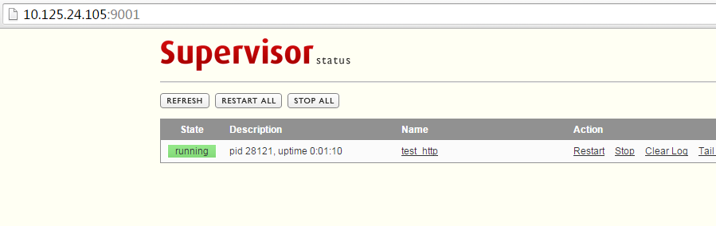

Linux进程管理工具——supervisor
介绍
Supervisord是用Python实现的一款非常实用的进程管理工具
安装
这里用源码
supervisor-3.1.3.tar.gz tar -zxvf supervisor-3.1.3.tar.gz cd supervisor-3.1.3 sudo python setup.py install
生成默认配置文件
echo_supervisord_conf > /etc/supervisord.conf
修改默认配置文件
如需允许web界面和命令行访问，修改inet_http_server配置
[inet_http_server] port=*:9001 ;这里*表示可以让其他终端访问supervisor web界面 username=username ; 用户名 password=password ; 密码
未知 具体功能，需修复
[supervisorctl] serverurl=unix:///tmp/supervisor.sock ; use a unix:// URL for a unix socket serverurl=http://127.0.0.1:9001 ; use an http:// url to specify an inet socket
修改进程

[program:test_http] command=python test_http.py 501 ; 被监控的进程路径 directory=/home/admin/soft/supervisor-3.1.3 ; 执行前要不要先cd到目录去，一般不用 priority=1 ;数字越高，优先级越高 numprocs=1 ; 启动几个进程 autostart=true ; 随着supervisord的启动而启动 autorestart=true ; 自动重启。。当然要选上了 startretries=10 ; 启动失败时的最多重试次数 exitcodes=0 ; 正常退出代码（是说退出代码是这个时就不再重启了吗？待确定） stopsignal=KILL ; 用来杀死进程的信号 stopwaitsecs=10 ; 发送SIGKILL前的等待时间 redirect_stderr=true ; 重定向stderr到stdout
stdout_logfile=/home/jihite/log/supervisor.log
这里test_http.py 位于directory（/home/admin/soft/supervisor-3.1.3）目录下
test_http.py
import sys import BaseHTTPServer from SimpleHTTPServer import SimpleHTTPRequestHandler HandlerClass = SimpleHTTPRequestHandler ServerClass = BaseHTTPServer.HTTPServer Protocol = "HTTP/1.0" if __name__ == "__main__": if sys.argv[1:]: port = int(sys.argv[1]) else: port = 8000 server_address = ('10.125.24.105', port) HandlerClass.protocol_version = Protocol httpd = ServerClass(server_address, HandlerClass) sa = httpd.socket.getsockname() print "Serving HTTP on", sa[0], "port", sa[1], "..." httpd.serve_forever()
启动
sudo supervisord -c /etc/supervisord.conf
管理
命令管理
sudo supervisorctl status: 查看当前运行的进程列表 stop xxx: 停止某一个进程(xxx)，xxx为[program:theprogramname]里配置的值。 start xxx: 启动某个进程 restart xxx: 重启某个进程 stop groupworker: 重启所有属于名为groupworker这个分组的进程(start,restart同理) stop all，停止全部进程，注：start、restart、stop都不会载入最新的配置文件。
重新加载配置文件
sudo supervisorctl -c /etc/supervisord.conf
界面管理

异常
1. Error: Another program is already listening on a port that one of our HTTP servers is configured to use. Shut this program down first before starting supervisord.
For help, use /home/admin/idcp-check/virtualenv/bin/supervisord -h
解决：(参考)
sudo unlink /tmp/supervisor.sock
or sudo unlink /var/run/supervisor.sock
2. 启动不起来
$sudo supervisorctl
create_roadnet_tasks3 FATAL Exited too quickly (process log may have details)
解决：（参考）
Check if supervisor startsecs=0 #被监控程序启动时持续时间
3. 启动不起来，日志提示不能用root用户启动
Running a worker with superuser privileges when the
worker accepts messages serialized with pickle is a very bad idea!
If you really want to continue then you have to set the C_FORCE_ROOT
environment variable (but please think about this before you do).
解决
from celery import Celery, platforms app = Celery('tasks', broker='amqp://myuser: mypassword@localhost :5672/vhost') platforms.C_FORCE_ROOT = True #加上这一行
@app.task def add(x, y): return x + y

昵称：
不改了 退出登录 订阅评论
[Ctrl+Enter快捷键提交]
【推荐】融云即时通讯云－豆果美食、Faceu等亿级APP都在用
【福利】你是我的好朋友，我要送你个天猫红包
· 跨界项目：基于Intel平台的Chromebook有望运行Windows软件
· 微软：升级Win10失败 免费送笔记本一台！
· 2016机器人世界杯：不容错过的精彩摔倒瞬间
· 微信Windows 10应用现身Windows商店
· 微软iOS应用迁移工具再进化：全新UIKit API
» 更多新闻...
· 编程的智慧
· 写给初学前端工程师的一封信
· 抽象：程序员必备的能力
· 编程同写作，写代码只是在码字
2014-12-04 谷歌
2012-12-04 隐马尔可夫模型（五）——隐马尔可夫模型的解码问题(维特比算法）